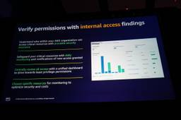
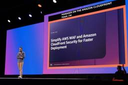
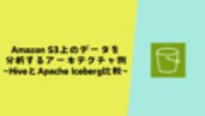
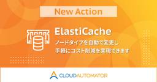
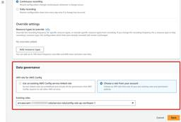
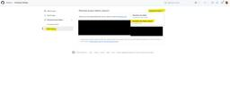
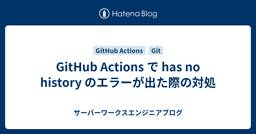
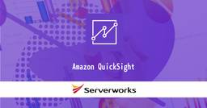

サーバーワークスエンジニアブログ
https://blog.serverworks.co.jp/
クラウド専業インテグレーター・サーバーワークスの中の人があらゆる技術についてお届けします。
フィード

【AWS re:Inforce 2025】Internal Access: 組織の誰がリソースにアクセスできるか (IAM307-NEW)
サーバーワークスエンジニアブログ
マネージドサービス部 佐竹です。AWS re:Inforce 2025 に現地参加してきましたので、そのログを順番に記述しています。本ブログは `IAM307-NEW Understand who in your organization can access your AWS resources` のセッションレポートです。ようは IAM Access Analyzer の新機能である Internal Access（内部アクセス）についてのセッションです。
1日前

Databricks 環境で学ぶ Delta Lake タイムトラベル
サーバーワークスエンジニアブログ
アプリケーションサービス本部の鎌田 (義) です。 データレイクで使用されるオープンテーブルフォーマットである Delta Lake, Apache Iceberg, Apache Hudi が提供する代表的な機能として以下があります。 ACID トランザクション タイムトラベル スキーマ強制と進化 本稿では、 Databricks が利用する Delta Lake におけるタイムトラベル機能について掘り下げます。 タイムトラベル機能とは タイムトラベルの利点 Delta Lake の構成 Databricks でタイムトラベル機能を検証 テーブル作成 データ追加/更新/削除 過去のバージョン…
1日前

【初心者向け】Amplify Gen 2 でブランチごとの環境を削除する方法
サーバーワークスエンジニアブログ
こんにちは。 アプリケーションサービス本部ディベロップメントサービス2課の濱田です。 豆乳でもヨーグルトが作れるのご存知ですか？ ヨーグルトメーカーのメニューにあって驚きました。 さっぱりしていて、なかなか美味しいです🥛 さて、 Amplify Gen 2 のちょっとした操作方法の共有です。 「あれっ、これどうやるんだっけ」と思ったあなたが、サクッとこのブログに辿り着いて、 問題解決の数分間を節約してもらえたら嬉しいです。 タイム・イズ・マニー！ 前提：Amplify Gen 2 におけるブランチとデプロイ 課題：環境の削除ボタンは何処？ 解決：ブランチの接続を解除 おまけ 前提：Amplif…
1日前

【AWS re:Inforce 2025】WAF と CloudFront セキュリティ設定 の簡素化とその効果 (NIS203-NEW)
サーバーワークスエンジニアブログ
マネージドサービス部 佐竹です。AWS re:Inforce 2025 に現地参加してきましたので、そのログを順番に記述しています。本ブログは `NIS203-NEW Simplify AWS WAF and Amazon CloudFront Security for Faster Deployment` のセッションレポートです。「簡素化によるイノベーションの加速」の実例を見ていきます。
2日前

【初心者向け】Route 53で知らないと凡ミスする部分【ドメイン登録】 1
1
サーバーワークスエンジニアブログ
24卒の石田です！ Amazon Route 53で.jpドメインをリクエストする際、「連絡先情報」の入力部分でミスしたので、自らの戒めとして残しておきます。 途中Route 53のポリシーや初心者向けの名前解決の仕組みについても触れているので、お時間と興味のある方はチラ見していってください。 新規ドメイン登録の概要やリクエスト手順については、以下の記事をご参照ください。 blog.serverworks.co.jp まとめ（急ぎの人用） 事態の説明 本来の手順 ミスの影響 連絡先情報の入力ミス 少し補足（Route 53のポリシーとTLD固有事象） ミスによって起きた事象 AWS側が情報の確…
2日前
Aurora DSQLのOCC(楽観的同時実行制御)を体験してみる 1
サーバーワークスエンジニアブログ
こんにちは、カスタマーサクセス部 CS2課の畑野です。 先日、大阪万博の来場予約をしようとしたところ、システム上で順番待ちとなりました。 ようやく自分の番が来て来場日時を指定し予約を進めると、「すでに予約枠が埋まっています」とのメッセージが返ってきました。 日時選択時点では枠が空いていたように見えたのに、予約できなかったのは“早い者勝ち競争”に敗れてしまったからだと推測しています。 今回はこの体験をきっかけに、楽観的同時実行制御（以下、OCC）を採用している Aurora DSQL の特性を活かして、 万博予約のような“予約合戦”を再現できるかを検証してみました。 検証内容 シナリオ 処理の流…
3日前
Docker基礎：Dockerイメージを作ってみた
サーバーワークスエンジニアブログ
はじめに こんにちは、25卒の山本です。 最近めちゃくちゃ暑くて四六時中クーラーが欠かせなくなってきましたが、引き続きブログ更新は頑張ります🔥 今回はDockerについて最近初めて触れたので、実際にどのようにしてDockerイメージを作っていくのかまとめたいと思います！ 基本概念については素敵な記事がすでにあったのでDockerの基本概念が知りたい方はぜひ読んでみてください✨ blog.serverworks.co.jp 前提条件 Docker Desktop がPCにインストールされていること。 ※今回はあくまで個人の検証レベルでの使用なので無料でDocker Desktopを使用しています…
3日前

Amazon S3上のデータを分析するアーキテクチャ例~HiveとApache Iceberg比較~
サーバーワークスエンジニアブログ
サーバーワークスの村上です。 今回はAmazon S3上にあるデータを外部テーブルとして分析する際、どのような方法があるか、主にHiveとApache Icebergを中心に比べてみました。 想定シーン パターン一覧 結論：Hive形式 とApache Iceberg形式の比較 扱うJSONデータ 想定オペレーション 参考比較：Amazon S3内のJSONを直接クエリ（非推奨） パターン①：S3にParquet保存 + Hive形式テーブル AWS Glue Data Catalog のテーブル作成 Amazon Data Firehoseの作成 Parquetに変換するよう設定する 動的パ…
3日前
Lambda で 日本語のPDF を作成してみる【TypeScript】
サーバーワークスエンジニアブログ
はじめに pdf-lib とは フォントの埋め込みとは 使用するフォントについて 実際にやってみる まとめ はじめに こんにちは、アプリケーションサービス本部 ディベロップメントサービス1課の北出です。 今回は、Lambda 関数内で PDF を作成し、 S3 バケットに出力する方法を紹介します。 言語は TypeScript で PDF 作成には pdf-lib を使用します。 デフォルトのフォントではすんなり PDF を作成できたのですが、デフォルトにはない日本語のフォントへの対応に苦戦したので備忘録もかねて紹介します。 pdf-lib とは pdf-lib は、JavaScript で …
3日前

【Cloud Automator】Amazon ElastiCache クラスターのノードタイプを変更できるようになりました
サーバーワークスエンジニアブログ
Cloud Automatorに、Amazon ElastiCacheクラスターのノードタイプを変更するアクションが新しく加わりました。 概要 新たに「ElastiCache: ノードタイプを変更」アクションをリリースしました。 このアクションを利用すると、ElastiCacheクラスターのノードタイプを自動的に変更することができます。 利用時間帯に応じてノードタイプを動的に変更したい、夜間や休日の利用していない時間帯のコストが無駄になっている、手動でのノードタイプ変更作業が負担になっている、といった課題にお悩みの方にご活用いただけます。 たとえば、開発環境で運用しているElastiCache…
3日前
【Cloud Automator】RDS Aurora DBクラスターをバックアップできるようになりました
サーバーワークスエンジニアブログ
Amazon RDS Aurora DBクラスターをバックアップするアクションがCloud Automatorに新しく加わりました。 概要 今回リリースされた「RDS(Aurora): DBクラスターをバックアップ」アクションにより、AWS Backupを活用したRDS Aurora DBクラスター（以下、Auroraクラスター）のバックアップを簡単に取得できるようになります。 これまでCloud Automatorでは、EC2インスタンスやS3バケットなど、主要なAWSリソースのバックアップを管理できるアクションを提供してきました。しかし、Auroraクラスター向けのバックアップ機能は存在し…
3日前
ETL と ELT の違い - サービス選定時の考慮事項
サーバーワークスエンジニアブログ
データドリブンな人間を目指している香取です。 データ分析の世界でよく耳にする「ETL」と「ELT」。ELT の方がモダンでイケてるんでしょ？くらいに思っていたのですが、それぞれ違いやサービス選定時の考慮事項を改めて整理してみました。 ETL と ELT とは？ 6つの観点から見る ETL と ELT の違い AWS 上でのデータパイプライン実装例 サービス選定時の考慮事項 コスト セキュリティ要件 パフォーマンスとスケーラビリティ 複雑な処理への対応 既存システムとの連携性 サポート・コミュニティの充実度 学習コストと導入しやすさ 生成 AI さいごに ETL と ELT とは？ ETL は …
4日前

AWS Config Recorder の IAM ポリシーに関するお知らせが来た方へ 1
サーバーワークスエンジニアブログ
マネージドサービス部 佐竹です。AWS Config に関する AWS からの通知 `[アクション推奨] AWS Config Recorder のカスタム IAM ポリシーを確認してください` を受信された方々に向けたブログとなります。通知を受け取られた方は、本ブログを参考に期限までのご対応をお願いいたします。
4日前

Amazon Q Business を Web サイトに組み込む
サーバーワークスエンジニアブログ
こんにちは、やまぐちです。 概要 やってみる Web サイトの作成 Web サイトに埋め込んでみる まとめ 概要 今回は、以下ドキュメントを参考に Amazon Q Business を Web サイトに組み込んでみたいと思います。 docs.aws.amazon.com よく Web サイト内にある、質問を回答してくれるチャットにイメージが近いです。 やってみる Web サイトの作成 今回は、CloudFront + S3 の静的 Web サイト内に Amazon Q Business のチャットを埋め込んでみます。 サイトはこんな感じです。（素晴らしいサイトですね！） Web サイトに埋め…
4日前

Amazon Q Developerのコンテキストフックでプロジェクトの設計書をコンテキストに追加する
サーバーワークスエンジニアブログ
こんにちは。 アプリケーションサービス部、DevOps担当の兼安です。 今回は、Amazon Q Developerのコンテキストフックを使用して、プロジェクトの設計書をコンテキストに追加してみようと思います。 本記事のターゲット 本記事の検証環境 コンテキストとは Amazon Q Developerのプロファイル Amazon Q Developerのコンテキストフック コンテキストを読み込んだか確認 Amazon Q Developerが自動でコンテキストに追加するファイル群 別のプロジェクトを開いてみた場合の挙動 rulesもコンテキストである まとめ [補足]Kiroにおけるコンテキ…
4日前

GitHub Actionsでworkflowフォルダ更新を伴うPushが出来ない場合の対処
サーバーワークスエンジニアブログ
はじめに Github Actionsでワークフローを実装していたところ、git pushコマンド実行時に以下エラーに遭遇したので備忘録。 ! [remote rejected] upstream-release/v4.3.2-16279331410 -> upstream-release/v4.3.2-16279331410 (refusing to allow a GitHub App to create or update workflow `.github/workflows/browser-extension.yml` without `workflows` permission) …
4日前

GitHub Actions で has no history のエラーが出た際の対処
サーバーワークスエンジニアブログ
はじめに GitHub Actionsで、「ソースリポジトリの最新リリース内容をターゲットリポジトリに反映させるためのPR」 を作成するコマンドを実行したところ、以下エラーに遭遇したので備忘録。 pull request create failed: GraphQL: The upstream-release/v4.3.2-16280363647 branch has no history in common with main (createPullRequest) 発生したエラーに対応する実行コマンドは以下だった。 このときソースブランチは、ソースリポジトリの最新のリリースタグでチェックア…
4日前

東京リージョンでGAになったQ in QuickSightで何ができるのか試してみる
サーバーワークスエンジニアブログ
さとうです。 先日、Q in QuickSightが東京リージョンでGAになりました！ aws.amazon.com 日本語入力は今年になってからサポートし始めていましたが、地理的な制約がなくなることで日本でも導入が増えそうです。 Q in QuickSightについて 概要 料金 分析データと環境の準備 分析テーマ 分析データ 分析環境 QuickSightの準備 データソース/データセットの作成 分析/ダッシュボードの作成 トピックの作成 各機能を試してみた 分析する人向けの機能 Q&A: トピックのデータやダッシュボードに自然言語で質問する Scenarios: 自然言語でダッシュボード…
5日前

AWS Systems Manager Parameter Store入門 AWS Secrets Managerとの違いから学ぶ活用法
サーバーワークスエンジニアブログ
AWSでアプリケーションを構築・運用する際、データベースの接続情報、APIキー、各種設定値などをどこで管理するかは、非常に重要な課題です。これらの情報をソースコードに直接書き込むこと（ハードコーディング）は、セキュリティやメンテナンス性の観点から避けるべきです。 この課題を解決するためにAWSが提供しているサービスとして、AWS Systems Manager Parameter Store（以下Parameter Store）とAWS Secrets Manager（以下Secrets Manager）があります。両サービスは機能的に似ている点も多く、「Parameter Storeの高性能…
8日前
UIから簡単にS3操作！AWSマネージドサービス AWS Transfer Family Web Apps 解説
サーバーワークスエンジニアブログ
こんにちは、近藤（りょう）です！ 今回は、フルマネージドでコード不要のウェブアプリケーションである AWS Transfer Family Web Apps を検証する機会がありましたので、その特徴と設定方法をご紹介します。 AWS Transfer Family Web Apps とは？ AWS Transfer Family Web Apps の特徴 ユーザビリティ・管理 ファイル転送機能 認証・認可 AWS Transfer Family Web Apps の制約 AWS Transfer Family Web Apps のコスト AWS Transfer Family Web Apps…
8日前
CDK Migrateで生成したコードを外部パラメータに対応させる
サーバーワークスエンジニアブログ
AWS CloudFormationからAWS CDKへの移行を成功させるために、外部パラメータの管理方法について詳しく解説します。
8日前
EventBridge Scheduler のスケジュールグループ機能の活用を考える
サーバーワークスエンジニアブログ
こんにちは😸 カスタマーサクセス部の山本です。 EventBridge Scheduler のスケジュールグループ機能 スケジュールグループごとの CloudWatch メトリクスの集計と監視 スケジュールの一括削除 環境名・システム名などのタグ付与 タグベースの権限付与（ABAC） まとめ 余談 EventBridge Scheduler のスケジュールグループ機能 EventBridge Scheduler にはグループ化の機能が存在しており、様々なスケジュールを分類して整理することが可能です。 利用開始時には default というグループが一つ存在しており、スケジュール作成時にはグルー…
9日前
Kiro（プレビュー版）によるはじめてのスペックコーディング
サーバーワークスエンジニアブログ
こんにちは。 アプリケーションサービス部、DevOps担当の兼安です。 今回は先日発表されたKiroとその特徴的な機能を使ってコーディングを試してみようと思います。 Kiroとは VibeとSpec Kiroのセットアップ Kiroのフックを使ってみる Kiroのスペックを使ってみる 要件の入力と要件定義書 設計フェーズへの移行と設計書 実装計画フェーズへの移行と実装計画書 実装の開始 Kiroのスペックを使った開発の感想 まとめ Kiroとは Kiroは2025年7月14日に発表されたAWS製のAI機能を備えたIDE（統合開発環境）です。 本資料作成時点（2025年7月16日）ではプレビュー…
10日前
CodeCommit から エラーコード 429 を受け取った原因と対策
サーバーワークスエンジニアブログ
こんにちは😸 カスタマーサクセス部の山本です。 前提 エラー 原因 対策 CodeBuild で実施可能な対策 まとめ おまけ 余談 前提 複数の CodeBuild プロジェクトが CodeCommit のリポジトリにあるソースコードを同時に クローンする構成があるとします。 エラー 私の検証では、CodeBuild プロジェクトを 7, 8 個同時に実行したあたりから、いくつかのプロジェクトで以下のようなエラーとなりました。 エラーは、CodeCommit からのクローンに失敗したという趣旨のものです。 git fetch failed with exit status 128: POST…
10日前
CDK MigrateでAWS CloudFormationから“差分ゼロ”移行を実現する方法
サーバーワークスエンジニアブログ
CDK Migrateを使用し、CloudFormationからAWS CDKへの移行時にメタデータを除去する方法を詳しく解説。既存のリソース差分をなくし、安心して移行作業を進める方法を紹介します。
10日前
【New Relic】AWSコストデータをAIで要約・分析！BedrockとNew Relicを連携させてみた
サーバーワークスエンジニアブログ
本記事では、AWS Lambda、Amazon Bedrockを活用し、New Relic上に作成したAWSのコストに関するダッシュボードを紹介します。日々のコスト実績や月末の予測コスト、コストが増加しているサービスやリージョンを自動で集計・可視化。さらに、Bedrockによる状況の要約や具体的なコスト削減案も提示し、Slackへ通知することで、「月末に請求額を見て焦る」ということがなくなります。
10日前
【AWS Summit Japan 2025】初参加！25新卒のサミット体験記
サーバーワークスエンジニアブログ
1. まずはコーヒーで一息 2. 印象に残ったブースを巡る 2.1 AWSを支えるハードウェア Nitro Card と Outposts 2.2 EKS Auto Mode：Kubernetes運用のさらなる自動化へ EKS Auto Modeの主なメリット・デメリット 2.3 あらゆる分野とAIの融合 スマート生産とAWS AWS Trainium、AIのためのハードウェア まとめ 皆さん、こんにちは！25卒新入社員のYiです。 先日開催されたAWS Summit Tokyo 2025に初めて参加してきました！ セッションやブースで学んだこと、感じたことをレポートにまとめました。 サミット…
11日前
AWS CDKでRDSのリストアを実装する時に注意するポイント
サーバーワークスエンジニアブログ
最近CDKデビューしたさとうです。 湿気で手がベタベタするので、この夏は湿気から逃れる避暑旅がしたいです🫠 それはともかく、AWS CDKのリストア運用に関するTipsをまとめてみました。 AWS CDK(Typescript、以下CDK)を前提としていること、ベストプラクティスに準拠した解説記事ではないことをご承知おきください。 CDKでRDSのリストアを実装するには？ サンプルコード 実装で注意するポイント ①: スナップショットのARNをリストア実行時以外に変更しない ②: リストア前後のRemovalPolicyを明示する ③: RDSに依存するリソースが存在する場合、Construc…
11日前
AWS 無料利用枠の概念が大きく変わりました
サーバーワークスエンジニアブログ
2025年7月15日に AWS Free Tier のアップグレードが行われ AWS 無料利用枠の概念が大きく変わりました。これまでと何が違うのか、新たに用意された AWS API がどのようなものなのかを確認した記事となります。
11日前